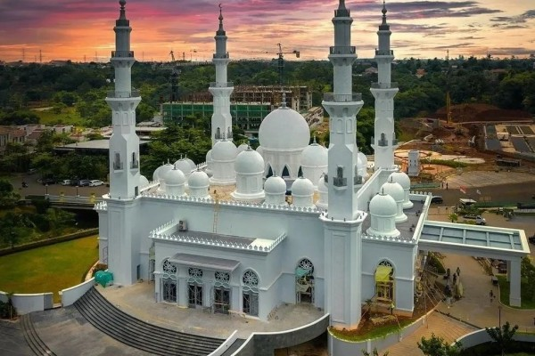
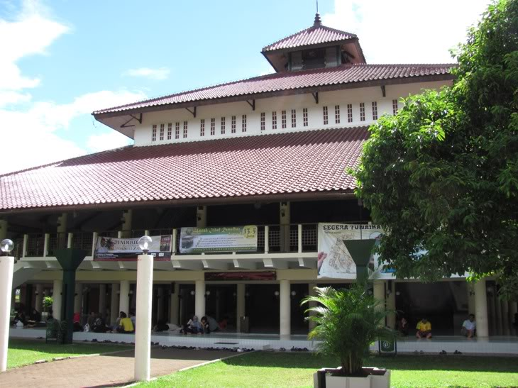

-
 Masjid Kubah Emas
Masjid Kubah EmasPendiri Masjid Dian Al Mahri atau dikenal Masjid Kubah Emas di Depok, Jawa Barat, Dian Djuriah Rais tutup usia. Dian adalah sosok di balik bangunan ikonik di Depok ini. Menurut skripsi karya Mirza Shahrani, Fakultas Teknik Universitas Indonesia, 2008, "Masjid Kubah Emas di Depok: Fenomena Reproduksi Masjid Kawasan Timur Tengah Dalam..
-
Masjid At-Thohir
Bangunan putih dan megah di kota Depok, Masjid At-Thohir menjadi wisata religi yang menarik untuk dikunjungi. Didirikan oleh Menteri BUMN Erick Thohir, pembangunan masjid diresmikan langsung oleh Presiden Joko Widodo. Keindahan masjid ini pun menarik perhatian masyarakat hingga viral di Tiktok. Yuk ketahui lebih lanjut mengenai masjid ini.
-
Masjid UI
Masjid Ukhuwah Islamiyah, yang lazim disebut Masjid UI, merupakan masjid kampus termuda di lingkungan kampus Universitas Indonesia setelah ‘abangnya’ Masjid Arief Rahman Hakim di kampus Salemba yang diresmikan dengan shalat Jum’at pertama tanggal 16 Agustus 1968 (22 Jumadilawwal 1388 AH) dengan Prof. Dr. HM. Rasjidi, Guru Besar Hukum Islam dan...